Puedes entrar en este santuario desde que llegas a la región de la torre de Eldin. Lo encuentras justo en la salida situada al norte de la Ciudad Goron (por el camino que te lleva a la mina).
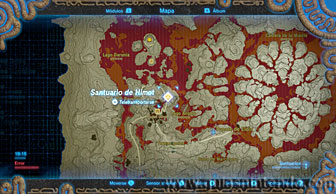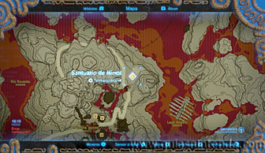
Una vez dentro avanza y encontrarás una puerta cerrada y un interruptor. Al pisarlo la puerta se abre, pero se vuelve a cerrar si te quitas de encima. Para dejarlo fijo puedes usar el paralizador o hacer caer el barril que hay arriba en una plataforma de madera (puedes lograrlo con fuego o una bomba).
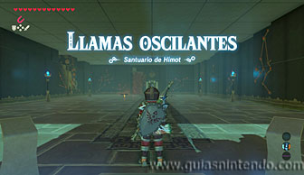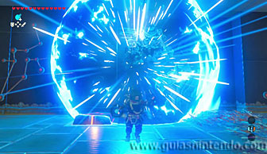
Al colocar el barril sobre el interruptor podrás seguir avanzando sin problemas. Nada más cruzar la puerta ve a la izquierda y encontrarás un cofre que contiene un Aplastarrocas.
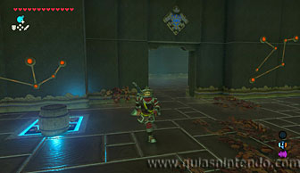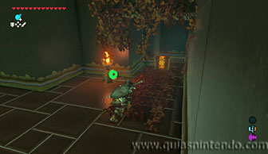
Después ve al otro extremo de la sala y te atacarán 3 miniguardianes que debes destruir como te resulte más fácil. Aquí, en una esquina tienes otro cofre (contiene un rubí). Después sube la rampa del fondo que hay en la pared detrás el cofre.
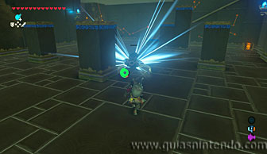
Al subir verás la puerta hacia el altar cerrada con una llave, sigue a la derecha y sube las escaleras. Ahí encuentras un interruptor que al pisarlo hace aparecer una lámpara del techo.
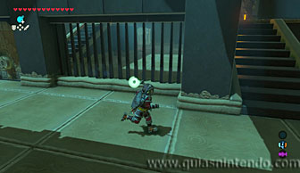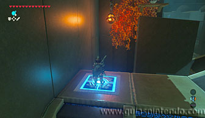
Si acercas esa lámpara (usando el módulo imán) hacia la pared del fondo, se prenderán las hojas y caerá una esfera (que quedará parada delante de una compuerta cerrada). Justo debajo del interruptor tienes otro cofre que puedes abrir sin problemas con 10 flechas de hielo dentro.
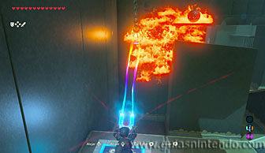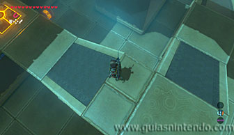
Ahora sigue el pasillo que hay al fondo y encontrarás una puerta cerrada a la derecha y un interruptor a la izquierda. Písalo para abrir la compuerta que impedía a la esfera seguir su camino. Al caer activará un mecanismo que abrirá la puerta cerrada que acabas de ver.
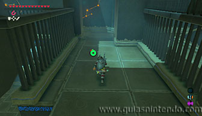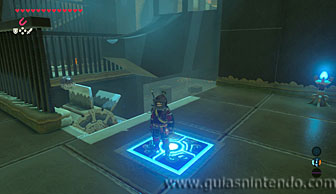
Corre antes de que se cierre y abre el cofre que encuentras allí dentro. Contiene la llave de la puerta del altar.
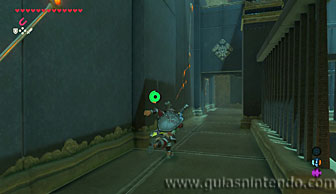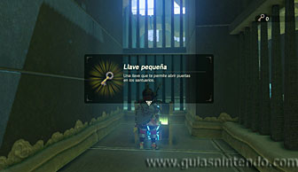
Ahora ya puedes regresar a la puerta de la llave y cruzar, sin embargo, todavía te queda una puerta cerrada más.
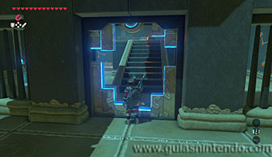
Pisa el interruptor y aparecerán dos lámparas del techo. El objetivo es quemar de nuevo las hojas, pero ahora las lámparas no llegan a la pared. Puedes usar flechas de fuego aunque también te servirán esas lámparas. Lo mejor es que consigas balancearlas (usando el imán) y después dispares una flecha a la cuerda para hacerlas caer. Cuando las quemes caerá el barril y podrás colocarlo sobre el interruptor para abrir la salida.
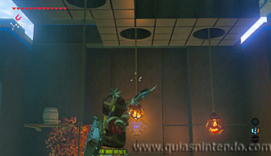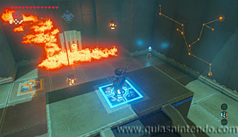
Cuando llegues al altar del santuario examínalo para obtener un símbolo de valía.
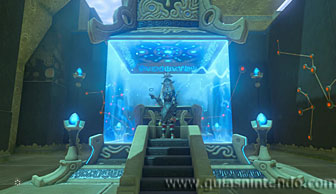